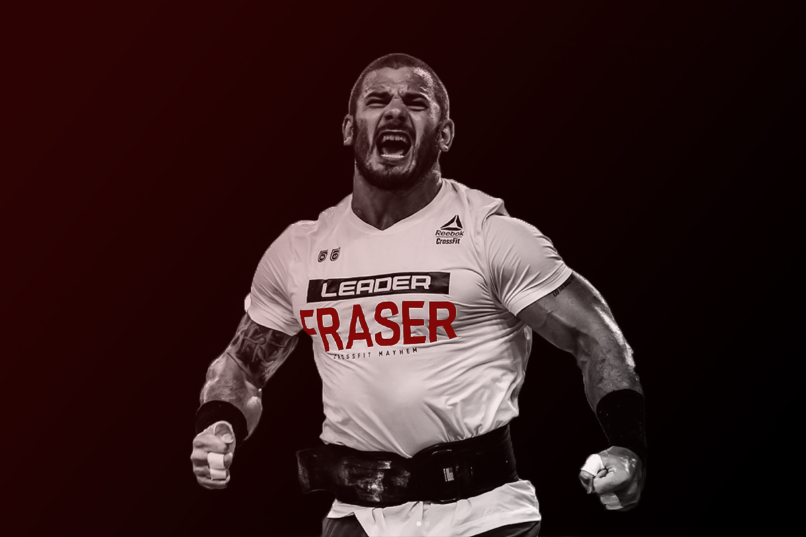

Crossfit
CrossFit se define como un sistema de entrenamiento de fuerza y acondicionamiento basado en ejercicios funcionales constantemente variados realizados a una alta intensidad.
El objetivo de esta preparación intenso es mejorar las diez capacidades físicas más reconocidas en las pesas: la resistencia cardiovascular, energética, la fuerza, la potencia, la velocidad, la flexibilidad, la precisión, la coordinación, el equilibrio y la agilidad del cuerpo.
- Sentadillas
- Overhead squats
- Pistol squats
- Burpees
- Muscle ups
- Handstand push ups
- Rowing o remo en máquina
- Box jumps
- Cluster
- Fondos en anilla
- Clean o cargada
- Jerk
- Snatch
- Sentadillas
- Overhead squats
- Pistol squats
- Burpees
- Muscle ups
- Handstand push ups
- Rowing o remo en máquina
- Box jumps
- Cluster
- Fondos en anilla
- Clean o cargada
- Jerk
- Snatch